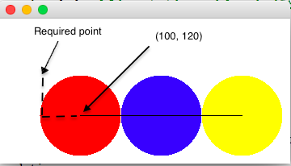

1.
Write an application, FavoriteSnack, to ask the user for his/her favorite snack and do the things listed below. There is no starter file.
Note: the snack may contain more than one word.
An application has a main method: public static void main(String[] args)
Use this exact prompt:
System.out.print("What is your favorite snack? ");
Then do the following
2.
Java, Inc wants to design a logo like the image below. Write an application LogoViewer to draw the image. The image consists of 3 circles whose center is on the same horizontal line. The middle circle is tangent (meets at one point) to the other two.There is a straight line between the center of the first circle and the center of the third circle.

Specifications:
Draw in the given order: red circle; blue circle, yellow cirecl, black line. Use the pre-defined colors from the Color class.
Remember you need to import the graphics package.
HINT: Notice that you are given the center of the circle and the radius, but to draw an Ellipse you need to calculate the upper left-hand corner of the bounding rectangle and the diameter. You did this in Lab 4.
3.
Write a class CerealBox to model a cereal box. a cereal box has double values width, height and depth.
The CerealBox class has a constructor that takes the width, height, and depth of the box as parameters (in that order).
The class has many methods, but you only need to implement the following methods:
public double getWidth() Gets the width of this CerealBox public void setWidth(double theWidth) sets a new width for the CerealBox public double getVolume() Gets the volume of the CerealBox so we know how much cereal it can hold. Provide Javadoc for the class, all methods, and the constructor.
There is no starter, but there is a tester in Codecheck
4.
Complete the method comparative() in the Adjective class. Adjective has a constructor (provided for you) that takes an English adjective as a String . Methods to get and set the adjective are also provided. Adjectives have a comparative and superlative form. You will complete the comparative method which returns the comparative form of the adjective. Follow the rules in the order below to find the comparative of an adjective (This is not strictly correct but we will pretend it is. Just follow the rules) Your code needs to work for all adjectives, not just the ones in the tester.
Here is a table of irregular adjectives
| adjective | comparative |
|---|---|
| good | better |
| far | farther |
Use if / else if / else. Do not use if / if / if. Use only 1 return statement.
5.
The program below has a faulty implementation of the method printChange.
The method might be called like this.
ChangeGiver change = new ChangeGiver();
change.printChange(42);
Trace the method call. Record results in the given file (5_trace.rtf located in the folder you downloaded). You can use TextEdit on the Mac or Wordpad on Windows
Fill in the columns in the table in 5_trace.rtf. Do not make your own file. I will only grade 5_trace.rtf. I have entered the first value for you. Notice that the value that changes in line1 of the code is entered in line 1 of the table
Enter each value in a different row. You will enter the value of the variable that changes in line 2 of the code on line 2 of the table. Then enter the value of the variable that changes in line 3 of the code on line 3 of the table.
Since the method is not correct, you should not expect it to work right. In your trace, show what happens, not what should happen.
public class ChangeGiver
{
final int QUARTER_VALUE = 25;
final int DIME_VALUE = 10;
final int NICKEL_VALUE = 5;
/**
* Prints the smallest number of quarters, dimes and nickels
* needed to give the specified amount of change
* @param changeToGive the amount of change to give
*/
public void printChange(int changeToGive)
{
int quartersToGive = changeToGive - QUARTER_VALUE; //line 1
int remainder = changeToGive % quartersToGive; //line 2
int dimesToGive = changeToGive / DIME_VALUE; //line 3
remainder = remainder - dimesToGive + 1; //line 4
int nickelsToGive = changeToGive / NICKEL_VALUE; //line 5
int penniesToGive = nickelsToGive % NICKEL_VALUE - 1; //line 6
// code to actually print would go here
}
}